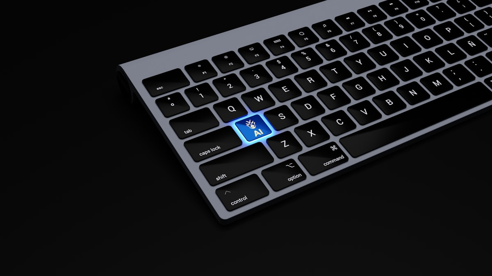

Çok Modlu (Multimodal) Modeller: Görüntü, Metin ve Sesi Birlikte İşleyen Yapay Zekâ Nasıl Çalışır?
Çok modlu modeller görüntü, metin ve sesi tek bir sistemde nasıl birleştirir? Vision-language modelleri, ortak embedding uzayını ve gerçek kullanım örneklerini sezgisel benzetmeler ve kısa kodla anlatıyoruz.
Oku
Difüzyon Modelleri ve Görüntü Üretimi: Gürültüden Görüntüye
Difüzyon modelleri görüntüyü nasıl üretir? İleri ve geri süreç, gürültüden görüntüye giden yol ve Stable Diffusion'ın latent alanı, günlük analojilerle sezgisel ve doğru biçimde anlatılıyor.
Oku
Model Damıtma ve Küçük Modeller: Büyük Öğretmenden Küçük Öğrenciye Bilgi Aktarımı
Model damıtma (knowledge distillation), büyük bir öğretmen modelin bilgisini küçük ve hızlı bir öğrenci modele aktarır. Yumuşak etiketleri, sıcaklığı ve damıtma kaybını; bunun neden, nasıl ve ne zaman işe yaradığını sezgisel örneklerle anlatıyoruz.
Oku
LoRA ve Verimli İnce Ayar (PEFT): Tüm Modeli Eğitmeden Uyarlama
LoRA ve PEFT'i sezgisel olarak anlatıyoruz: tüm modeli eğitmeden, düşük ranklı küçük adaptörlerle uyarlama, bellek/maliyet avantajı ve pratik kullanım ipuçları.
Oku
Prompt Injection ve Jailbreak: Yapay Zeka Güvenliğinin Temelleri
Prompt injection ve jailbreak nedir, nasıl çalışır? RAG ve ajan sistemlerindeki riskleri ve katmanlı savunma yöntemlerini sade analojilerle anlatıyoruz.
Oku
Fonksiyon Çağırma ve Yapılandırılmış Çıktı: Modeli Güvenilir Bir Bileşene Dönüştürmek
Fonksiyon çağırma ve yapılandırılmış çıktı, dil modelini serbest metin üreten bir sohbetçiden sistemlerinize güvenle bağlanan bir bileşene dönüştürür. JSON üretimi, şema zorlama ve sağlam entegrasyon pratiklerini sezgisel örneklerle anlatıyoruz.
Oku
LLM Maliyet Optimizasyonu: Token, Önbellekleme, Model Seçimi ve RAG ile Faturayı Düşürmek
LLM faturasını düşürmenin pratik kaldıraçları: token tüketimini azaltma, prompt caching, görevi modele eşleştirme, toplu işleme (batch) ve küçük model + RAG dengesi. Sezgisel analojiler ve örnek kodla, doğru sırayla maliyet optimizasyonu.
Oku
RLHF ve Model Hizalama: Yardımsever ve Güvenli Modeller, Ödül Modeli ve DPO
Bir modeli neden ve nasıl "yardımsever ve güvenli" hale getiririz? RLHF'in üç adımını, ödül modelini ve daha sade alternatif DPO'yu günlük analojilerle anlatıyoruz.
Oku
LLM Gözlemlenebilirliği: İzleme, Loglama ve Değerlendirme Döngülerine Pratik Bir Bakış
LLM tabanlı ürünlerde gözlemlenebilirliği ele alıyoruz: izleme (tracing), loglama, değerlendirme döngüleri ile üretimde kaliteyi koruma ve regresyonları erken yakalama.
Oku
Yapay Zeka Ürünlerinde Kullanıcı Deneyimi (AI UX): Belirsizlikten Güvene
Yapay zeka ürünlerinde kullanıcı deneyimi nasıl tasarlanır? Belirsizliği yönetmek, kaynak gösterme, geri bildirim, hatada zarafet ve güven inşası için pratik rehber.
Oku
Büyük Dil Modelleri (LLM) Nasıl Çalışır? Transformer Mimarisinin Sezgisel Anlatımı
LLM'ler nasıl çalışır? Bir sonraki kelimeyi tahmin etme, dikkat (attention) ve katmanlar üzerinden Transformer mimarisini sezgisel, teknik ama anlaşılır anlatıyoruz.
Oku
Token ve Embedding: Bir Dil Modeli Metni Nasıl "Görür"?
Tokenizasyon, kelime parçaları ve embedding vektörleri sezgisel anlatımla: metnin anlamı bir dil modelinin içinde nasıl sayıya ve koordinata dönüşür?
Oku
RAG Nedir ve Uçtan Uca Nasıl Kurulur? Pratik Bir Mimari Rehber
RAG nedir, nasıl çalışır? Belge, chunk, embedding, vektör arama ve bağlamla üretim adımlarını küçük kod örnekleriyle uçtan uca anlatan pratik mimari rehber.
Oku
Vektör Veritabanları Rehberi: Benzerlik Araması, HNSW ve FAISS / pgvector / Qdrant Karşılaştırması
Vektör veritabanlarını sezgisel anlatan rehber: benzerlik araması, ANN ve HNSW algoritması, FAISS, pgvector ile Qdrant karşılaştırması ve ne zaman hangisini seçmelisiniz.
Oku
Prompt Mühendisliği: Pratik Teknikler ve Gerçek Örnekler
Açık talimat, few-shot, adım adım düşündürme, rol verme ve çıktı biçimlendirme: dil modellerinden daha iyi sonuç almanın pratik tekniklerini örneklerle anlatıyoruz.
Oku
Fine-tuning mi, RAG mi, Prompt mu? Hangisini Ne Zaman Kullanmalı
Fine-tuning, RAG ve prompt yaklaşımlarını maliyet, güncellik ve doğruluk açısından karşılaştırıyoruz. Hangisini ne zaman seçmeli? Pratik karar tablosu içerir.
Oku
LLM Halüsinasyonları: Neden Olur ve Nasıl Azaltılır?
LLM halüsinasyonu neden olur ve nasıl azaltılır? Kaynağa demirleme (grounding), RAG, doğrulama, kendini kontrol ve temperature ayarıyla pratik önlemler.
Oku
Açık Kaynak LLM'ler: Llama, Mistral, Qwen ve Gemma'ya Pratik Bir Bakış
Llama, Mistral, Qwen ve Gemma gibi açık kaynak LLM'leri kapalı modellerle karşılaştırıyoruz: gizlilik, maliyet, ince ayar özgürlüğü ve ne zaman tercih edilir.
Oku
LLM'leri Nasıl Değerlendiririz? Otomatik Ölçütler, LLM-as-Judge ve RAG Sadakati
LLM değerlendirmesi rehberi: otomatik ölçütler, LLM-as-judge, insan değerlendirmesi, alan-özel test setleri ve RAG için sadakat (faithfulness) ölçümü.
Oku
Bir Yapay Zeka Modelini Üretime Almak (MLOps): Demodan Gerçek Ürüne
MLOps nedir? Yapay zeka modelini üretime almanın yolu: sürümleme, izleme, gecikme/maliyet, geri bildirim döngüsü ve güvenli dağıtımı sade bir dille anlatıyoruz.
Oku
Tarık Şenkal kimdir?
Kurucunun kısa hikâyesi.
Oku
EcoFluxion nasıl ortaya çıktı?
EcoFluxion basit bir soruyla nasıl başladı ve neden kendi ürünlerini geliştiriyor.
Oku
İçtiHub nedir?
Hukuk profesyonelleri için yapay zeka destekli platform: içtihat arama, belge analizi.
Oku